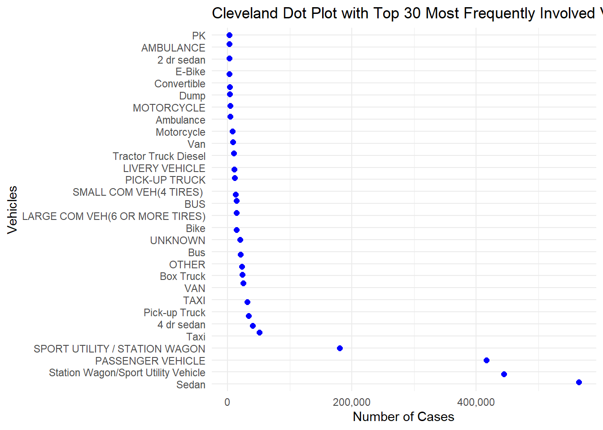

The following objects are masked from 'package:stats':
filter, lag
The following objects are masked from 'package:base':
intersect, setdiff, setequal, union
Code
library(ggplot2)library(stringr)data <-read.csv("collisions.csv")# converting the empty char cells to NAdata <-mutate_all(data, ~ifelse(is.character(.x) &nchar(.x) ==0, NA, .x))
3.1 When is it safe to drive or walk (basically get home alive)?
We have a heatmap to represent the frequency of crashes by day of the week and hour of the day. This reveals the patterns in crash occurrence, suggesting potential countermeasures like increased enforcement or public awareness campaigns during high-risk periods.
Code
library(lubridate)
Attaching package: 'lubridate'
The following objects are masked from 'package:base':
date, intersect, setdiff, union
Code
# convert CRASH.DATE column from char to datedata$CRASH.DATE <-as.Date(data$CRASH.DATE, format ="%m/%d/%Y")data2 <- data[c("CRASH.DATE", "CRASH.TIME")]# convert CRASH.TIME column from char to POSIXct timedata2$CRASH.TIME <-as.POSIXct(data$CRASH.TIME, format ="%H:%M")# Extract day of the week and hour of the daydata2 <- data2 %>%mutate(DayOfWeek =weekdays(CRASH.DATE),HourOfDay =hour(CRASH.TIME))# Convert DayOfWeek to factor data2$DayOfWeek <-factor(data2$DayOfWeek, levels =rev(c("Monday", "Tuesday", "Wednesday", "Thursday", "Friday", "Saturday", "Sunday")))# group by DayOfWeek and HourOfDay to representsummarized_data2 <- data2 %>%group_by(DayOfWeek, HourOfDay) %>%summarise(Frequency =n())
`summarise()` has grouped output by 'DayOfWeek'. You can override using the
`.groups` argument.
Code
# summarized_data2# Create a heatmapggplot(summarized_data2, aes(y = DayOfWeek, x = HourOfDay, fill= Frequency )) +geom_tile(stat ="identity") +scale_fill_viridis_c(trans ="reverse") +labs(title ="Heatmap for DayOfWeek and HourOfDay",x ="Hour of the Day",y ="Day of the Week",fill ="Frequency") +theme_minimal()
From the heatmap above shows that the frequency of collisions has been fairly low after 1AM till 5AM, but as the day goes on, the numbers of collisions increase and it is maximum around 4PM-5PM.
Another insight from the above visualization is that there is a clear difference in frequency of collisions on Saturday and Sunday, compared to the other days of the week. We can notice that the frequency of collisions on these two days is comparatively less than the other days.
3.2 Should you buy a Sedan?
Code
#taking top 30 most frequent vehicles involved in collisionsvehicles <-sort(table(data$VEHICLE.TYPE.CODE.1),decreasing =TRUE)[seq(1,30)]# Convert the vehicles vector to a dataframedata31 <-data.frame(Values = vehicles)colnames(data31) <-c("vehicle", "frequency")# data31# Create a Cleveland dot plotggplot(data31, aes(x = vehicle, y = frequency)) +geom_point(position ="jitter", color ="blue", size =2) +labs(title ="Cleveland Dot Plot with Top 30 Most Frequently Involved Vehicles", x ="Vehicles", y ="Number of Cases") +theme_minimal() +scale_y_continuous(labels = scales::comma) +coord_flip()

The bar graph shows that the type of vehicle that has been most frequently involved in the collision cases has been Sedan with over 500K reported cases in the last 11 years, followed by Station Wagon/Sport Utility Vehicle, Passenger Vehicle and Taxi.
3.3 What causes Collisions to happen?
Code
#taking top 20 most frequent contributing factors in collisionsfactors <-sort(table(data$CONTRIBUTING.FACTOR.VEHICLE.1), decreasing =TRUE)[seq(1,20)]# Convert the factors vector to a dataframe data32 <-data.frame(Values = factors)colnames(data32) <-c("factor", "frequency")# data32# Create a Cleveland dot plotggplot(data32, aes(x = factor, y = frequency)) +geom_point(position ="jitter", color ="blue", size =2) +labs(title ="Cleveland Dot Plot with Top 20 Most Frequently Contributing Factors",x ="Contributing Factors",y ="Number of Cases") +theme_minimal() +scale_y_continuous(labels = scales::comma) +coord_flip()
As we see, maximum number of cases have unspecified cause of collision (with almost 700K cases).
But in known reasons of collision, Driver Inattention or Distraction stands on top. Following that there’s failure to yield right-of-way, following the vehicle too closely or backing unsafely.
It’s interesting to notice that alcohol involvement and unsafe speed stand a little less high on the most frequently contributing factors list than they are generally thought to be.
One contributing factor that most people would not guess to be so frequent is Prescription Medication. Almost 20K cases has reported that to be the major contributing factor of collision.
3.4 Who gets hurt and how?
Code
library(tidyr)# You can use your entire dataset or filter it based on your analysis needsdata4 <- data[c("NUMBER.OF.PEDESTRIANS.INJURED", "NUMBER.OF.PEDESTRIANS.KILLED","NUMBER.OF.CYCLIST.INJURED", "NUMBER.OF.CYCLIST.KILLED","NUMBER.OF.MOTORIST.INJURED", "NUMBER.OF.MOTORIST.KILLED")]# Pivot longer the columnsdata4_long <- data4 %>%pivot_longer(cols =starts_with("NUMBER.OF."),names_to ="Category",values_to ="Count" ) # summarizing by group sumdata4_summarized <- data4_long %>%group_by(Category) %>%summarise(Count =sum(Count))# adding new column person_involved and fatality_type with information for the existing datadata4_summarized <- data4_summarized %>%mutate(person_involved =gsub("NUMBER.OF.(\\w+)\\.(\\w+)", "\\1", Category),fatality_type =gsub("NUMBER.OF.(\\w+)\\.(\\w+)", "\\2", Category) )# Drop the Category columndata4_summarized <- data4_summarized[, c("person_involved", "fatality_type", "Count")]# Calculate percentages for each combination of fatality_type and person_involveddata4_summarized <- data4_summarized %>%group_by(fatality_type) %>%mutate(percentage = Count /sum(Count))# data4_summarized#create a stacked bar chartggplot(data4_summarized, aes(x = fatality_type, y=Count, fill = person_involved)) +geom_bar(position ="fill", stat ="identity") +geom_text(aes(label = scales::percent(percentage)),position =position_fill(vjust =0.5), # Adjust text positionshow.legend =FALSE) +# Hide legend for the textlabs(title ="Percent Stacked Bar Chart of Fatalities",x ="Fatality Type",y ="Percentage",fill ="Person Involved") +scale_y_continuous(labels = scales::percent_format(scale =100)) +# Format y-axis as percentagetheme_minimal()
The above stacked bar chart gives some interesting information and comparison in data.
Of all the people who are injured or killed, there is a similar percentage that is cyclists. But percentage of pedestrians killed in collision is thrice the percentage of pedestrians injured. This is opposite for the motorists. This implies that given a person gets into a crash, the chances of them dying are way higher if they are a pedestrian than a motorist.
Of all the people who get killed in collisions, more than 50 percent are pedestrians. This says that pedestrians are the most prone to a serious fatality in a collision.
3.5 How did the number of Collisions changed over time?
Code
# Create a new dataset with month-year and count columnsdata5 <- data %>%mutate(MonthYear =format(CRASH.DATE, "%Y-%m")) %>%group_by(MonthYear, BOROUGH) %>%summarise(CrashCount =n())
`summarise()` has grouped output by 'MonthYear'. You can override using the
`.groups` argument.
Code
# converting MonthYear in data5 to date formatdata5$MonthYear <-as.Date(paste(data5$MonthYear, "01", sep ="-"))# omit NA valuesdata5 <-na.omit(data5)# Create a separate dataset for overall patternoverall_pattern <- data5 %>%group_by(MonthYear) %>%summarise(TotalCases =sum(CrashCount))# Create a time series line plotggplot(data5, aes(x = MonthYear, y = CrashCount, color = BOROUGH)) +geom_line(size =1, alpha =0.5) +geom_line(data = overall_pattern, aes(x = MonthYear, y = TotalCases, color ="OVERALL"), linetype ="solid", size =1.3) +labs(title ="Time Series Line Plot of Case Counts by Borough",x ="Year",y ="Case Count") +theme_minimal() +scale_x_date(date_labels ="%Y", date_breaks ="1 year")
The time series plot of case count shows the trends of number of cases over the years in different boroughs of New York and also as a whole (“overall”).
The most visible trend in the graph is that there was a major dip in the number of reported collision cases in 2020, which is potentially because of the pandemic and the lockdown. Even though we can see that the cases started to rise after 2020, the numbers have still been nearly half of what it used to be before 2020.
Brooklyn has been on top when it comes to the number of reported collisions, followed by Queens, Manhattan and Da Bronx. Staten Island has had the least reported cases since 2012, and it is the only borough that did not see any decrease in the number of cases during lockdown.
3.6 Who is more likely to get involved in Collisions? - Demographic Study
Code
library(vcd)
Loading required package: grid
Code
library(ggmosaic)
Attaching package: 'ggmosaic'
The following objects are masked from 'package:vcd':
mosaic, spine
Code
# reading the people datapeople_data <-read.csv("people.csv")people_data <-mutate_all(people_data, ~ifelse(is.character(.x) &nchar(.x) ==0, NA, .x))# Filter the data based on the conditionpeople_data <-subset(people_data, (PERSON_TYPE =="Occupant"& POSITION_IN_VEHICLE =="Driver") | PERSON_TYPE =="Bicyclist"| PERSON_TYPE =="Pedestrian")# Replace "Occupant" with "Driver" in the PERSON_TYPE columnpeople_data$PERSON_TYPE <-ifelse(people_data$PERSON_TYPE =="Occupant", "Driver", people_data$PERSON_TYPE)#drop the rows where PERSON_SEX is "U"people_data <-subset(people_data, PERSON_SEX !="U")# taking a subset of these three columns onlydata6 <- people_data[c("PERSON_AGE", "PERSON_SEX", "PERSON_TYPE")]# omitting the rows with NA valuesdata6 <-na.omit(data6)# Filter rows based on the condition for PERSON_AGEdata6 <- data6 %>%filter(PERSON_AGE >=1& PERSON_AGE <=100)# Create age bins with intervals of 10labels =c("0-9", "10-19", "20-29", "30-39", "40-49", "50-59", "60-69", "70-79", "80-89", "90-100")# Add a new column 'AgeBin' to the dataframedata6 <- data6 %>%mutate(AgeBin =cut(PERSON_AGE, breaks =seq(0, 100, by=10), labels = labels, include.lowest =TRUE))# Create a mosaic plotvcd::mosaic(PERSON_SEX ~ PERSON_TYPE + AgeBin, data = data6, highlighting_fill =c("lightgreen", "cornflowerblue"), main ="Mosaic Plot", direction=c("v","v","h"))
Of all the people getting into collisions, a big majority of them are drivers, and a very few are bicyclists or pedestrians.
Almost 80% of all bicyclist and 75% of drivers are male. But in case of pedestrians, there is a nearly 50-50 between men and women over all ages.